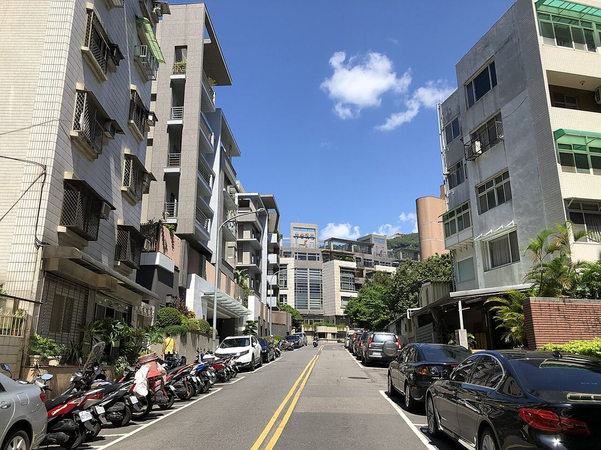
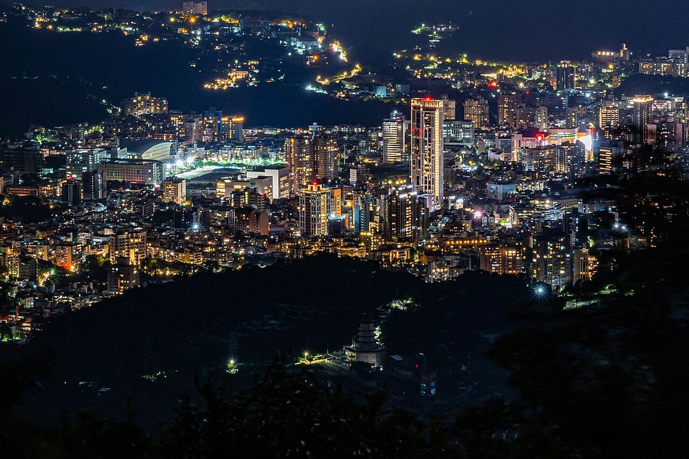
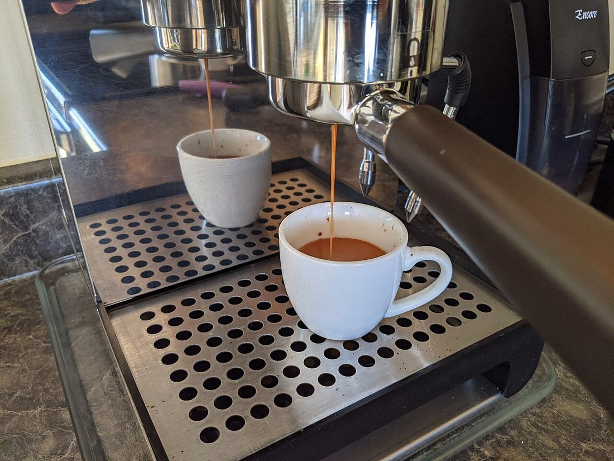
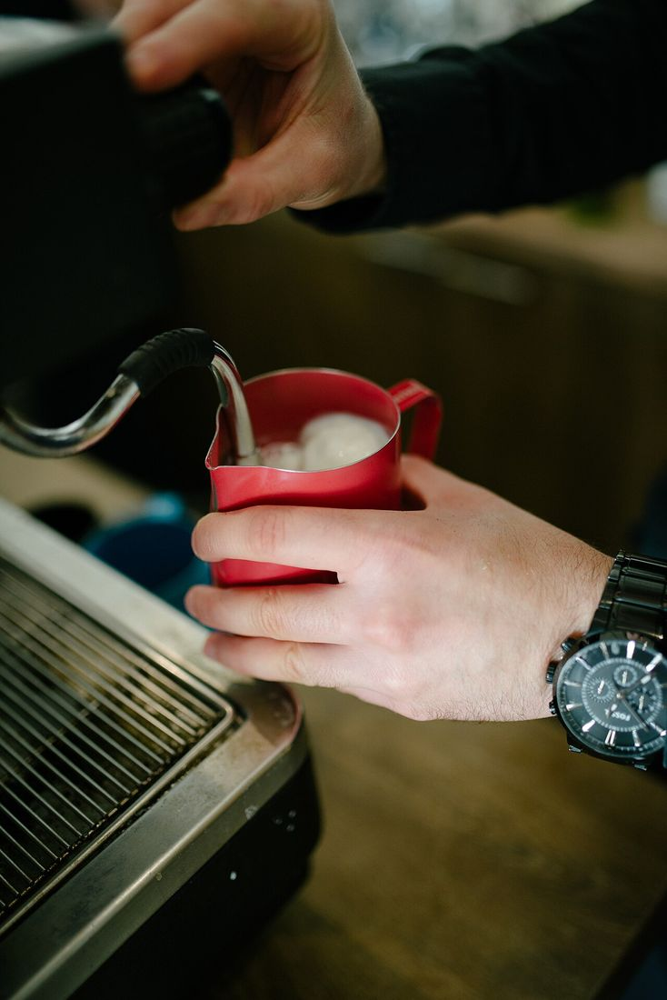

台北老店．天母、士林與民生社區
台灣第一家星巴克
一九九八年三月二十八日，台灣第一家星巴克在台北天母開幕。隔年的雜誌寫著：一杯熱拿鐵，105 元。

統一和星巴克
經營它的是「統一星巴克」，由統一集團和美國星巴克合作成立，公司在一九九七年就成立了。
早期美方只占 5%，二〇〇三年拉高到一半。
二〇一七年，全部買回來
二〇一七年，統一企業和統一超商花了大約 1.75 億美元，買回美方那 50%。從此台灣星巴克百分之百由統一持有，當時全台約 410 家店。
到了二〇二六年五月，宣布突破 600 家。
回到天母
二〇一七年十二月，天母開了天玉門市，黑鐵拱門、大樹圍繞的獨棟店面，媒體形容是「回到起點」。
專業點：拿鐵的基底
・雙份濃縮常見做法：18 克粉 → 萃取 36 克
・粉水比約 1：2，時間 25–30 秒
・再加大量蒸氣牛奶和一層薄奶泡，就是拿鐵
老照片與街景




店家資訊
- 店家
- 星巴克天玉門市
- 地點
- 台北市士林區天玉街38巷18弄1號
- 現況
- 出發前先確認
- 營業時間
- 常有變動，出發前請再確認
- IG 影片
- 1/5 上片
你還記得自己喝的第一杯星巴克是哪一家、點了什麼嗎？
到 IG 留言告訴我們
到 IG 留言告訴我們